Seja Bem-Vindo ao Japão
Seja bem-vindo ao seu guia para explorar o Japão, um país que combina tradição e inovação em cada detalhe. Se você sonha em conhecer um lugar onde templos antigos se encontram lado a lado com arranha-céus futuristas, onde a tranquilidade dos jardins zen contrasta com a energia de suas grandes cidades, o Japão é o destino ideal para você. Ao visitar o Japão, você poderá desfrutar de uma rica culinária, com pratos como sushi e ramen, e explorar a beleza de paisagens que vão das montanhas de Hokkaido às praias de Okinawa. Além disso, a cultura japonesa é repleta de tradições fascinantes, como as cerimônias do chá e o mundo dos animes. Prepare-se para descobrir um país onde cada experiência é única. Seja bem-vindo ao Japão, um destino que promete memórias inesquecíveis!
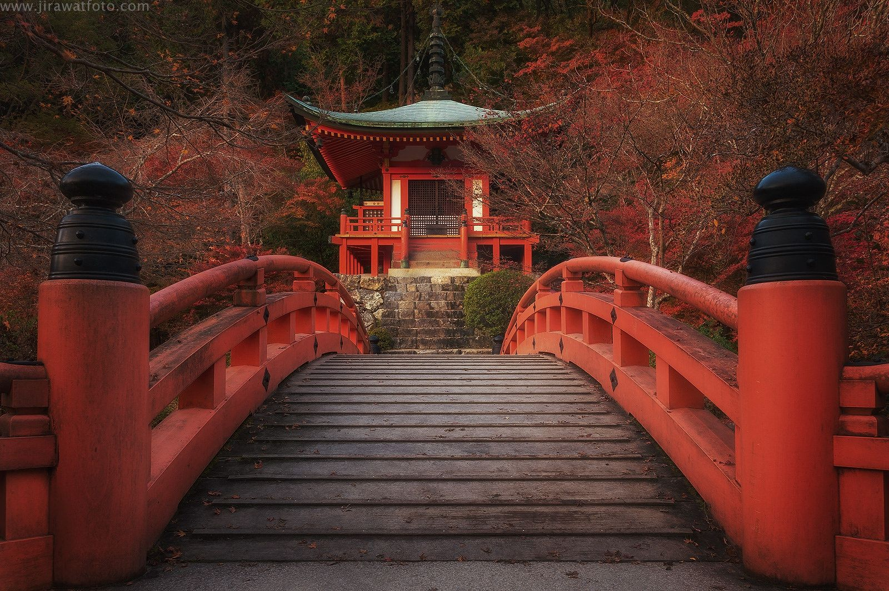Cultura e Tradição
O Japão é um país rico em tradições milenares e cultura vibrante. Os templos e santuários, como o Templo de Kinkaku-ji em Quioto e o Santuário de Itsukushima na ilha de Miyajima, são símbolos dessa herança cultural, atraindo visitantes com sua beleza e espiritualidade. As cerimônias do chá são uma prática que reflete a estética e o respeito, onde a preparação do matcha se transforma em uma forma de arte. Além disso, os matsuri, ou festas populares, celebram as estações do ano com danças e trajes tradicionais, como no famoso Gion Matsuri. A cultura japonesa também se destaca nas artes e ofícios, como cerâmica e caligrafia, que preservam técnicas antigas e valorizam a conexão com a natureza. Em meio a essa tradição, o Japão abraça a modernidade, com cidades que combinam arranha-céus futuristas e áreas históricas, criando um ambiente fascinante.
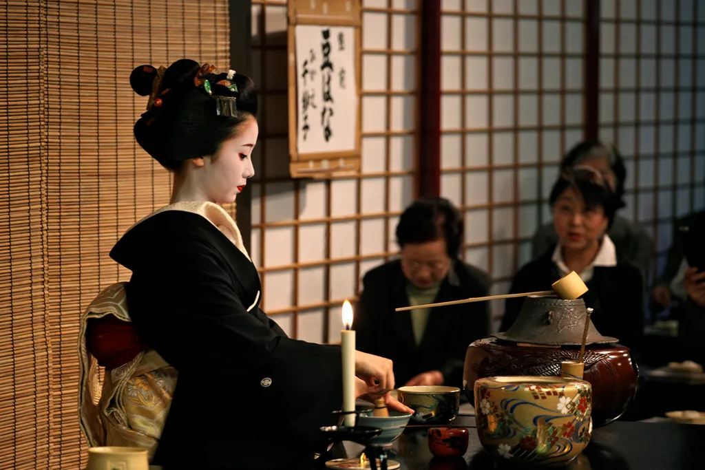Natureza e Paisagens
O Japão é conhecido por sua impressionante beleza natural, que varia ao longo das estações do ano. Na primavera, as cerejeiras (sakura) florescem, criando paisagens deslumbrantes que atraem milhões de visitantes para festivais como o Hanami, onde as pessoas se reúnem para admirar as flores. Durante o verão, as montanhas e florestas oferecem trilhas para caminhadas e as praias de Okinawa tornam-se um refúgio perfeito para quem busca relaxamento e atividades aquáticas. O outono traz um espetáculo de cores, com folhas que mudam de verde para tons vibrantes de vermelho e laranja, especialmente nas montanhas dos Alpes Japoneses. O inverno, por sua vez, transforma regiões como Hokkaido em um paraíso para esportes de neve, com festivais de esculturas de gelo e oportunidades para esquiar. O Monte Fuji, com sua forma icônica, se destaca como um símbolo da beleza japonesa, atraindo peregrinos e turistas que desejam capturar sua majestade. Com uma natureza tão diversificada, o Japão oferece experiências únicas em cada estação, convidando todos a explorar suas paisagens impressionantes.
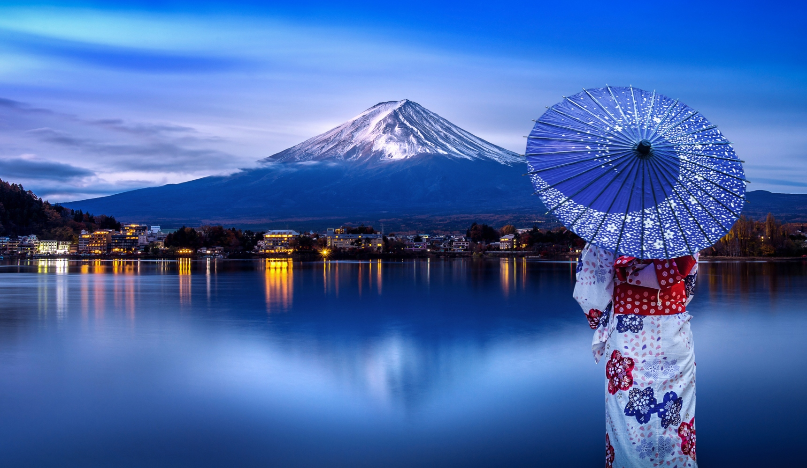 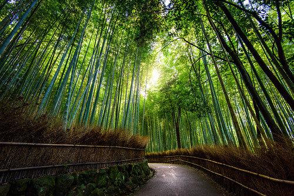Gastronomia
A culinária japonesa é uma das mais diversificadas e ricas do mundo, oferecendo muito mais do que o famoso sushi. Cada região do Japão tem suas especialidades, influenciadas por ingredientes locais e tradições culturais.
1. Sushi e Sashimi:
Embora sejam muito populares, sushi e sashimi são apenas uma pequena parte do que a culinária japonesa tem a oferecer. O sushi, que combina arroz temperado com peixe ou vegetais, e o sashimi, que consiste em fatias finas de peixe fresco, são apenas a ponta do iceberg.
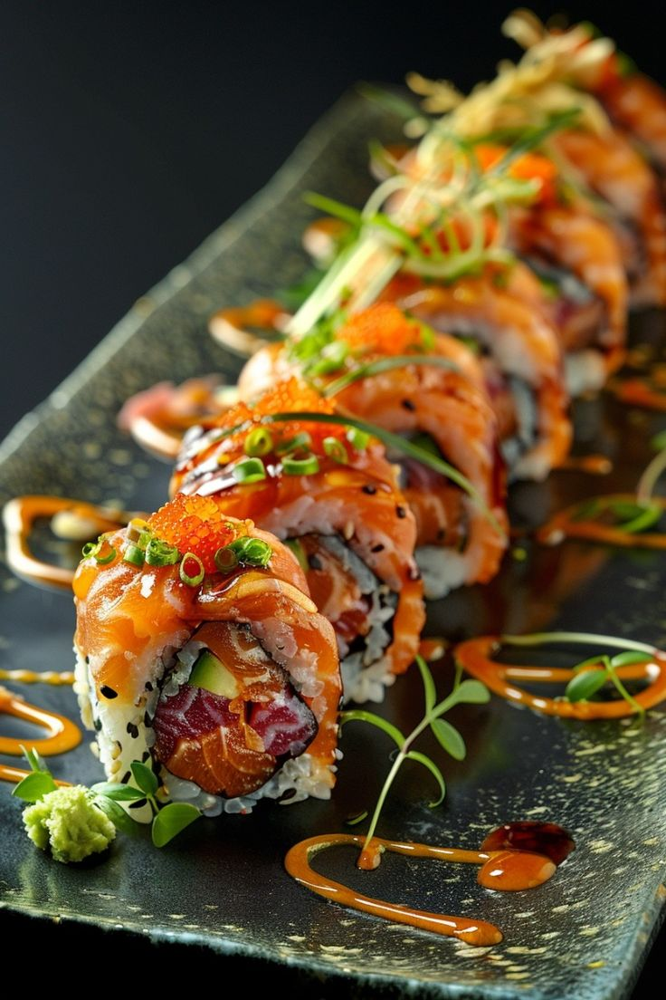 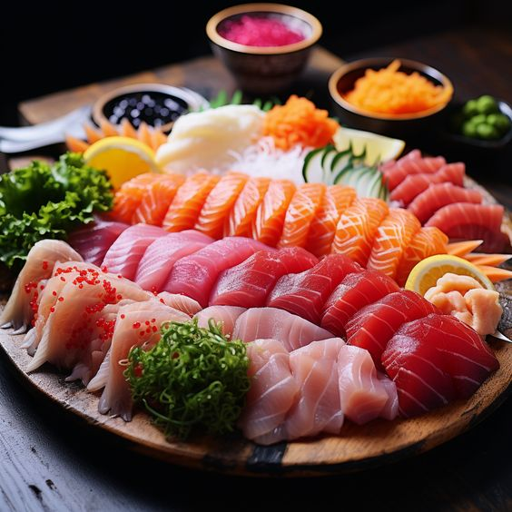2. Ramen:
Um dos pratos mais amados no Japão, o ramen é uma sopa de macarrão que pode variar amplamente em sabor e ingredientes. Existem diferentes estilos, como o shoyu (soja), miso, shio (sal) e tonkotsu (caldo de osso de porco), cada um com seu próprio perfil de sabor. O ramen é frequentemente servido com fatias de carne, ovo cozido e vegetais.
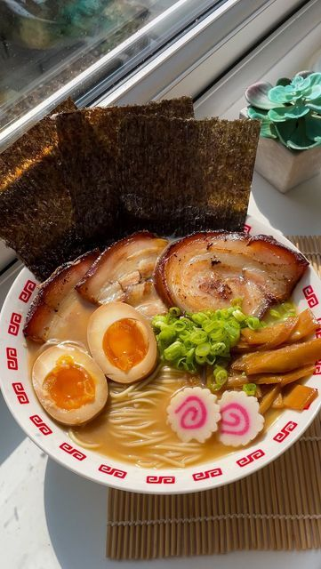3. Udon e Soba:
Os udon são macarrões grossos feitos de trigo, enquanto os soba são feitos de farinha de trigo sarraceno. Ambos podem ser servidos frios ou quentes, muitas vezes com caldo, vegetais e proteína, oferecendo uma experiência de sabor única.
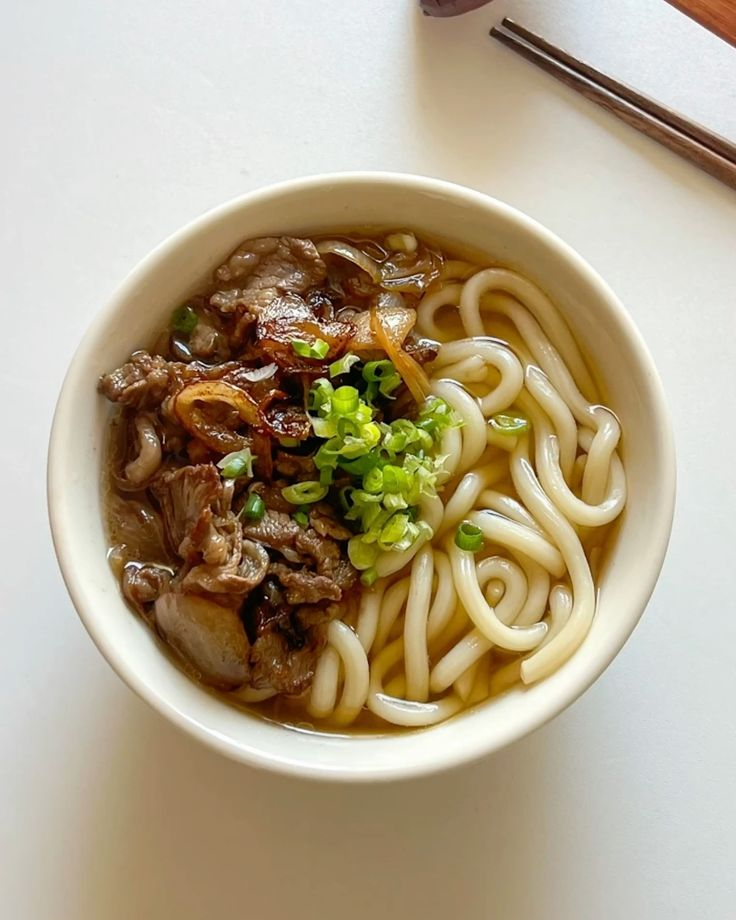
4. Tempurá:
Este prato consiste em frutos do mar ou vegetais empanados e fritos de maneira leve e crocante. A tempurá é frequentemente acompanhada por um molho especial e é uma verdadeira iguaria que combina textura e sabor.
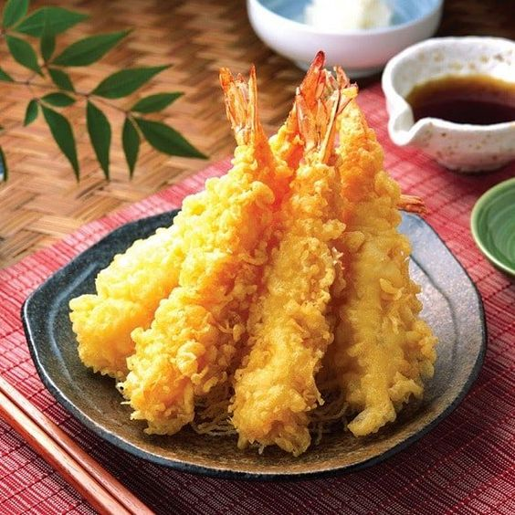5. Yakitori:
Espetinhos de frango grelhados, o yakitori é uma popular comida de rua que pode ser encontrado em izakayas (pubs japoneses) e festivais. Os pedaços de frango são temperados com sal ou molho tare, que é uma mistura de soja, mirin e açúcar.
6. Delícias Sazonais:
A culinária japonesa valoriza a sazonalidade, e muitos pratos mudam ao longo do ano para incorporar ingredientes frescos e de alta qualidade. Pratos sazonais podem incluir chawanmushi (um pudim de ovo salgado), matsutake gohan (arroz com cogumelos matsutake) e sukiyaki, que é uma mistura de carne e vegetais cozidos em um molho doce.
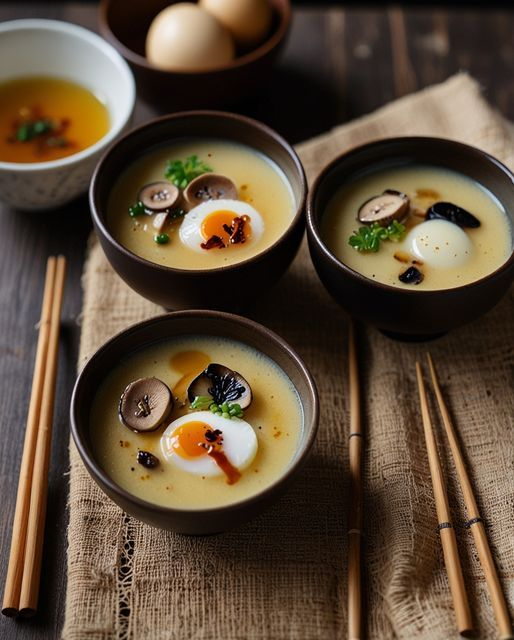 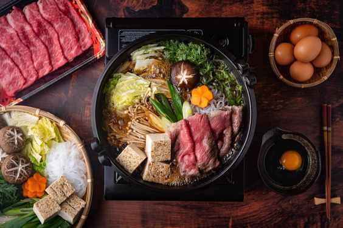
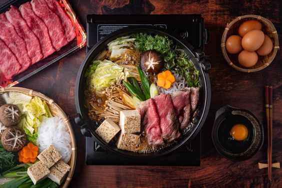
7. Confeitaria:
As sobremesas japonesas, como mochi (bolinho de arroz) e dorayaki (panquecas recheadas com pasta de feijão doce), são igualmente deliciosas e frequentemente apresentam sabores sutis que refletem a cultura japonesa, como o uso de chá verde e feijão azuki.
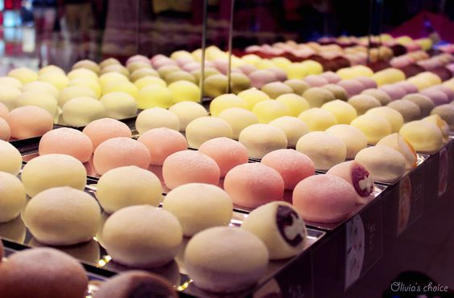 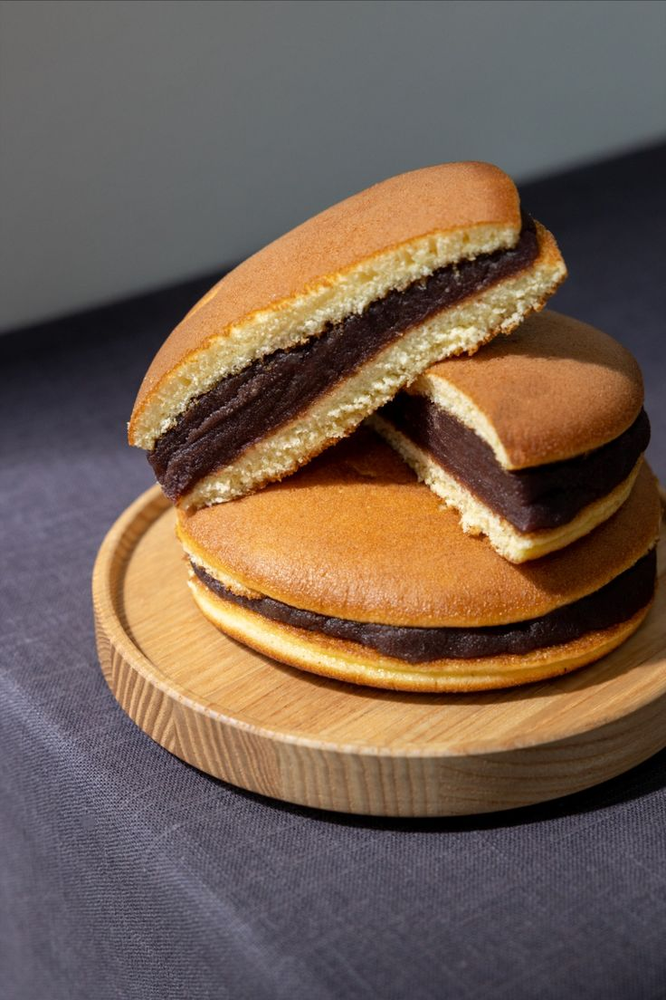